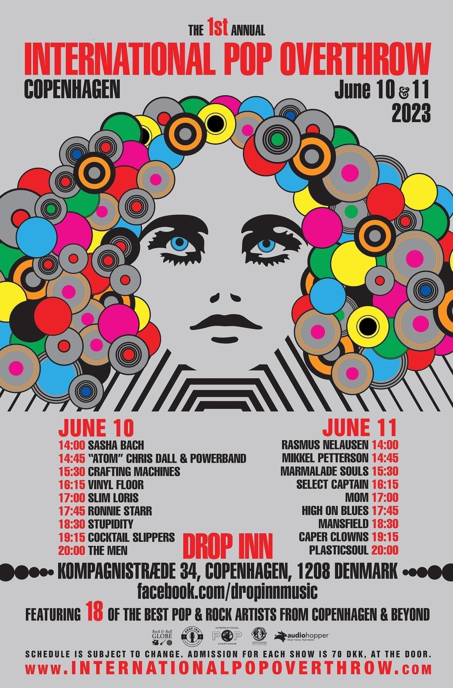

SHOWS
Saturday, August 19th 2023
Hard Rock House, Helsinki, Finland Hard Rock House
Saturday, June 10th 2023
Drop Inn, Copenhagen, Denmark International Pop Overthrow

PAST SHOWS
DROP INN, Copenhagen, Denmark.
SEMIFINAL, Helsinki + Knucklebone Oscar.
YO-TALO, Tampere + FILLIP.
LIBERTE, Helsinki + FILLIP.
TORVI, lahti + FILLIP.
KLUBI, Tampere + FILLIP.
RODEO, Vantaa + FILLIP.
KLUBI, Turku + FILLIP.
GLORIA, Helsinki + FILLIP.
Private Party, Porvoo.
ON THE ROCKS, Helsinki + Turku Romantic Movement.
SEMIFINAL, Helsinki + Turku Romantic Movement.
HENRY'S PUB, Kuopio + Turku Romantic Movement.
VASTAVIRTA, Tampere + Turku Romantic Movement.
DYNAMO, Turku + Turku Romantic Movement.
BELLY Helsinki + Turku Romantic Movement + Patsy Walkers.
RODEO, Vantaa + Turku Romantic Movement.
KUUDES LINJA, Helsinki. Bianca Popin kokoelman julkkaribileet.
LOUHELA JAM, Bar Luna, Vantaa + The Wrecking Queens.
ON THE ROCKS, Helsinki. + Lady Escape.
SEMIFINAL, Helsinki. + Lady Escape.
TELAKKA, Tampere. + Zacharius Carls Group.
SEMIFINAL, Helsinki. + Zacharius Carls Group
JÄRVENPÄÄN PUISTOBLUES, Järvenpää. Yano-klubi.
+ 22-pistepirkko
ESPAN LAVA, Helsinki.
GLORIA, Helsinki. + Zacharius Carls Group, Shake, Kevin, Protestants.
SEMIFINAL, Helsinki.
STELLA STAR, Helsinki. + Tinker.
PÄIVÄKOTI, Turku. + Tinker.
LIBERTE, Helsinki.
AMADEUS, Tampere.
DOWNTOWN, Turku. + Järjestyshäiriö.
KIPSARI, Helsinki. + Tinker.
TORVI, Lahti. + Järjestyshäiriö.
TAVASTIA, Helsinki. + ZCG, Shake.
RYTMIKATTI, Kouvola. + ZCG, Shake
KLUBI, Tampere. + ZCG, Shake.
LUTAKKO, Jyväskylä. + ZCG, Shake.
STELLA-STAR, Helsinki.
ROCKTOBERFEST 2004, Kajaani.
MARK'S, Joensuu.
KLUBI, Tampere.
HENRY'S PUB, Kuopio.
DOWNTOWN, Turku.
ISO MASA, Masala.
YKSITYISTILAISUUS, Helsinki.
CLUB 25, Vaasa.
SEMIFINAL, Helsinki.
SOCIS, Karjaa.
VERNISSA, Vantaa.
BAR MARY, Porvoo.
AMADEUS, Tampere.
ROCKPERRY, Vaasa.
TAMMERFEST, Tampere.
STELLA-STAR, Helsinki (+Special Guests).
ESPAN LAVA, Helsinki
SEMIFINAL, Helsinki.
STELLA-STAR, Helsinki. PRIVATE PARTY.
TAVASTIA, Helsinki.
KASINO, Kauhajoki.
TIVOLI, Rovaniemi.
45-SPECIAL, Oulu.
Old School, Turku.
Vanha, Helsinki. KRAFTWERKET,
CLUB 25, Vaasa.
Musiikki & Media, Tampere.
TORVI, Lahti.
HENRY'S PUB, Kuopio.
SEMIFINAL, Helsinki.
DOWNTOWN, Turku.
NOSTURI, Helsinki (Lemonator).
Stella Star, Helsinki (Lovestone).
Tiger, Helsinki.
Gloria, Helsinki (Apulanta).
Kokemäki, Viihdekeskus Henrik (Apulanta).
Seinäjoki, Duuni klubi (Apulanta).
Seinäjoki, Urheilutalo (Apulanta).
Vaasa, Hullu pullo (Apulanta).
Helsinki, Tavastia (Apulanta).
Lohja, Tanhuhovi (Apulanta).
Oulu, Foxia (Apulanta).
Kemi, Tervahalli (Apulanta).
Rovaniemi, Monde (Apulanta).
Kemijärvi, Liikuntahalli (Apulanta).
Ylitornio, Kuntotalo (Apulanta).
Turku, Kåren (Apulanta).
Tampere, Pakkahuone (Apulanta).
Kouvola, Rytmikatti (Apulanta).
Helsinki, Transworld Snowboarding -julkaisujuhlan jatkot , System.
Taiteiden Yö, Mannerheimintien Free Record Shop, Helsinki.
TAVASTIA, Helsinki
HUKKAROCK, Tuuri. (hukkarock.com)
NOSTURI, Helsinki.
JÖRISROCK, Suonenjoki.
Melufestarit, Masala.
Factory, Helsinki.
Oranssi, Helsinki.
Ravintola Kultakaivos, Vantaa (Volume, Breeze).
Heureka, Vantaa (yksityispippalot).
Pohjantähti, Teuva (Apulanta).
Kåren, Turku (Apulanta).
Raumanlinna, Rauma (Apulanta).
Casino, Heinola (Tehosekoitin).
Semifinal, Helsinki. (Tinker)
Factory, Helsinki (Zacharius Carls Group).
Ravintolalaiva Wäiski, Helsinki Hakaniemen ranta (Adriane).
Saunabar, Helsinki (yksityistilaisuus).
Hukkaperii-pikkujoulut, Tuuri.
Studio Skaala, Tähtisgaala, Helsinki (kutsuvieraille).
Oranssi, Helsinki (Perhearvot, Personal Aspect).
Doors, Tampere (Lovestar).
Stella Star, Helsinki (Rockers Unite).
Hietaniemi, Helsinki, Attacin tilaisuus, hyväntekeväisyyskeikka.
Factory, Helsinki (Perhearvot).
Piritta, Helsinki (Aurora K, Wave).
Nosturi, Helsinki (Tehosekoitin).
Hukkarock 001, Tuuri.
Louhela Jam 2001 (Reprinted, Tehosekoitin).
Premiere Nights, Helsinki.
Stella Star, Helsinki. (Foreign Female).
Ravintola Premiere Nights Helsinki.
Nosturi, Helsinki (Tehosekoitin, KMA).
Semifinal, Helsinki (Cosmobile, Genius Breed).
Ravintola Old Baker`s Helsinki (Genius Breed).
Ravintola Premiere Nights Helsinki.
Ravintola Kantri Star, Helsinki. Stetsonit mukaan!!! (Adriane, Sticco Lipp).
Vernissa, Tikkurila Vantaa.
Club Noir 2 (Adriane, Sticco Lipp).
Gloria, Helsinki.
Club Noir, Helsinki. (Adriane, Sticco Lipp)
Oranssi (Kuollut Etana).